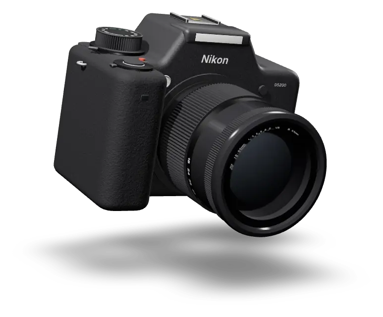
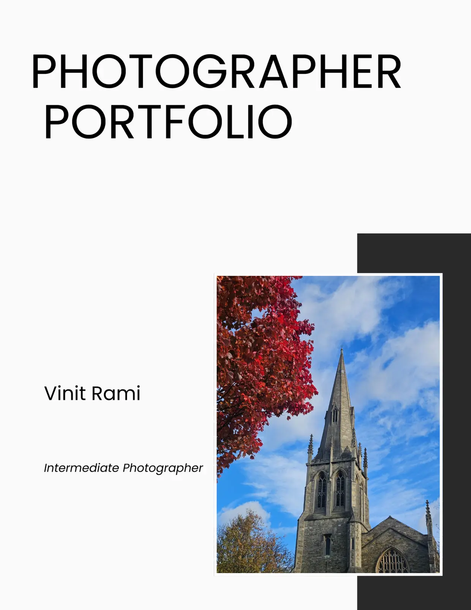
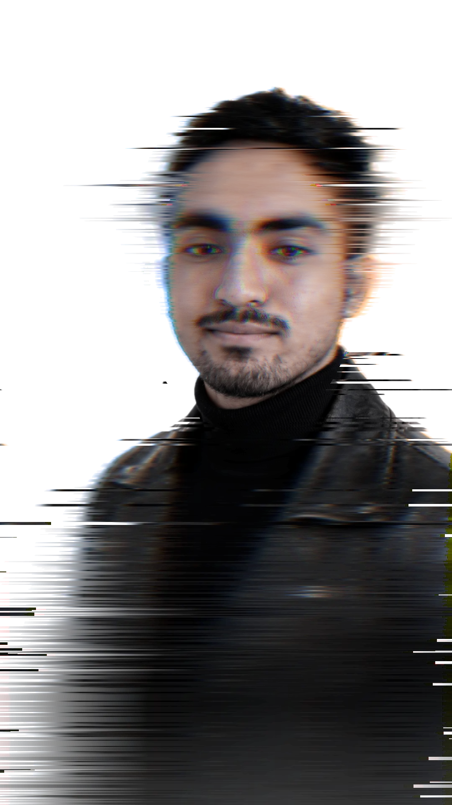

VINITRAMI
Vol. 01
DarkroomPhotography
Shot
on
NikonD5200 / 18-55mmDrag to turn it
on
NikonD5200 / 18-55mmDrag to turn it
Look through
the lens.London
Singapore
Gujarat
the lens.London
Singapore
Gujarat
24Frames
on the
card
on the
card
© 2026 Vinit Rami
All rights reserved.
All rights reserved.

Drag to turn it. Click the lens, the glass, the shutter or the red button.
AutoEverything on the card / 24 frames
Statue of Unity, GujaratLandscape / 1/6
Open the darkroom
Statue of Unity, GujaratNikon D5200 / 1/400 F11 ISO 200 27mm

signal layer
form through light

VINITRAMI
portrait studylight and storyframe memory
01 / about
Vinit Mayurkumar Rami
Intermediate photographer, born in 2002
I capture life's meaningful moments through the lens. My work is about creativity and storytelling: turning ordinary scenes into extraordinary memories.
I shoot landscapes and interiors for businesses and individuals, from the grandeur of natural landscapes and the intimacy of baby shoots to the energy of restaurant and hotel interiors.
- FOCUS
- Landscape, indoor, live events, illusion sets
- SERIES
- My Works, The Art of Storytelling, Capturing Emotions, The Enchanted Forest
- KIT
- Nikon D5200, Galaxy S23
- TOOLS
- Photoshop, Illustrator, InDesign, Sketch, Figma, HTML, CSS
- ALSO
- Branding, web, print, illustration, social graphics
@vinitrami_x_aperture
Pick up the camera“I'm always excited to collaborate on new projects. Let's create something amazing together.”
ramivinit@gmail.com